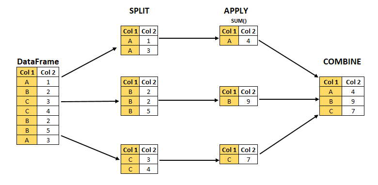

![]()
## In Julia
julia> sum(1:1_000_000_000)
500000000500000000
## In R
> options(digits=20)
> sum(1:1000000000)
[1] 5.000000005e+171 Overview
Julia is an open source, general purpose programming language for scientific computing and is well suited for data science. I taught R programming for several years at the UC Berkeley School of Public Health. I recently posted a blog entry on why I switched from R to Julia (“My Journey from R to Julia”). In this blog entry I review the book “Julia for Data Analysis” by Bogumit Kaminski [1]. In short, this is an outstanding book that I highly recommend without any reservations (5/5 stars). This review is a working blog that I will be updating with highlights from the book.
For data science, Julia is exploding in popularity and there are numerous outstanding resources for learning Julia, including books, videos, and blog postings. I purchased the print and eBook option which includes an online “liveBook” which is easy to read. However, we cannot beat having a book in hand to read and markup. The author provides a GitHub repository with code and data files.
The author, Bogumit Kaminski, is a core developer of the DataFrames.jl package. He is an associate professor and head of the Decision Support and Analysis Unit at the SGH Warsaw School of Economics, as well as adjunct professor at the data science laboratory, Ryerson University, Toronto.
This book is perfect for population health data scientists already familiar with R or Python, or already have basic proficiency with Julia but need an in depth and systematic introduction to Julia for data science.
Here is the table of contents.
- Introduction
- Getting started with Julia
- Julia’s support for scaling projects
- Working with collections in Julia
- Advanced topics on handling collections
- Working with strings
- Handling time-series data and missing values
- First steps with data frames
- Getting data from a data frame
- Creating data frame objects
- Converting and grouping data frames
- Mutating and transforming data frames
- Advanced transformations of data frames
- Creating web services for sharing data analysis results
2 Book highlights
2.1 Chapter 1 Introduction
My blog posting “My Journey from R to Julia” is a good summary of what is covered in the Introduction. I will cover just one item—execution speed, and compare it to R.
We will construct a for loop summation of a random sequence of integers from 1 to 1,000,000,000 (1 billion) that are sampled without replacment.1 Here is the correct answer as a reference:
By default, R would give the wrong answer (not shown) because it uses 64-bit floating point numbers.2 To get the correct answer we need 64-bit integers. For this I used the bit64 R package to get the correct answer (below).
> require("bit64")
> n = 1000000000
> samp = sample(1:n, n, replace=FALSE)
> sum_n = function(x){
+ s = as.integer64(0)
+ for (i in x){
+ s = s + i
+ }
+ s
+ }
> system.time(x <- sum_n(samp))
user system elapsed
11094.792 101.378 11201.145
> x
integer64
[1] 500000000500000000To get the correct answer in R, the execution time was about 11,095 seconds. Okay, let’s try Julia.
julia> using StatsBase, BenchmarkTools
julia> n = 1_000_000_000;
julia> samp = sample(1:n, n, replace=false);
julia> function sum_n(x)
s = 0
for i in x
s = s + i
end
return s
end
sum_n (generic function with 1 method)
julia> @btime sum_n(samp)
158.118 ms (1 allocation: 16 bytes)
500000000500000000In Julia, it took about 158 milliseconds. R is about 70,168 times slower than Julia!3
Conclusion: Compared to R, Julia can handle large for loops for summation and give an accurate answer fast. To add integers correctly using a for loop, R requires using the bit64 package but is 70,168 time slower than Julia. With R, we are taught to avoid for loops — now you know why. However, a for loop is a workhorse tool that we want available to us; hence, this a huge advantage of Julia.
To see more benchmarks visit Which programming language is fastest?.
2.2 2 Getting started with Julia
2.2.1 Basic data types
If you are familar with R or Python, you will feel comfortable with Julia. Here is a character:
## character; notice single quotation marks
'a''a': ASCII/Unicode U+0061 (category Ll: Letter, lowercase)A string is a collection of characters:
## string; notice double quotation marks
"Hello World""Hello World"An array is a collection in brackets. A vector is a 1-dimensional array. Commas are used to create a vector. By default, the vector is displayed vertically, but it is not a “column vector”.
## vector
[1, 2, 3]3-element Vector{Int64}:
1
2
3To display horizontally use the show function.4
## vector
show([1, 2, 3])[1, 2, 3]A matrix is a two-dimensional array. Numbers separated by spaces create one row of a matrix. This is not a vector.
## matrix
[1 2 3 4]1×4 Matrix{Int64}:
1 2 3 4Matrix rows separated by a semi-colon creates a multi-row matrix:
## matrix
[1 2 3 4; 6 7 8 9]2×4 Matrix{Int64}:
1 2 3 4
6 7 8 9The size function returns the dimensions of an array. Previously, we learned that a vector is a 1-dimensional array.
size([1, 2, 3])(3,)We see this vector is 1-dimensional ((3,)); in contrast,
size([1 2 3])(1, 3)this is a (1, 3) matrix or 2-dimensional.
A tuple is a collection in parentheses, and commas separate the elements. Above, the size function returned a tuple. Tuples are immutable; their elements cannot be changed. Immutable objects increase computational speed.
## tuple
(1, 2, 3)(1, 2, 3)Tuple elements can be named.
## named tuple
(four = 4, five = 5, six = 6)(four = 4, five = 5, six = 6)The assigment operation (=) is used to bind data values to a variable. Binding in Julia is similar to binding in Python, but not in R.
x = [1, 2]
y = x
y2-element Vector{Int64}:
1
2If we change an element in x, the same change occurs in y because same array was binded to the variables x and y.
x[2] = 99
## notice that y changes also
y2-element Vector{Int64}:
1
99This is not the case in R:
> x = c(1, 2)
> y = x
> x[2] = 99
> x
[1] 1 99
> y
[1] 1 2To replicate the R experience in Julia we assign a copy of x to y.
x = [1, 2]
y = copy(x)
x[2] = 99
x2-element Vector{Int64}:
1
99y2-element Vector{Int64}:
1
22.2.2 Basic functions
In my blog posting “My Journey from R to Julia” I demonstrated how to create a simple function to calculate the odds ratio using 3 methods with multiple dispatch.5 I will use the function that calculates the odds ratio using the cross-product of 4 integers, and build a more useful function to illustrate some features of Julia.
For an appropriately structured table, for example,
| Exposure | Disease | No disease |
|---|---|---|
| Yes | a | b |
| No | c | d |
the odds ratio is the cross-product:
\[ OR = \frac{a d}{b c} \]
Here is a simple Julia function to calculate the odds ratio:
function oddsratio(a, b, c, d)
or = (a * d) / (b * c)
return or
end oddsratio (generic function with 1 method)Because this is a simple function, it can also be created in an abbreviated form:
oddsratio(a, b, c, d) = (a * d) / (b * c)oddsratio (generic function with 1 method)Here is data from a case-control study [2]:
| Exposure | Case | Control |
|---|---|---|
| Highest | 12 | 6 |
| Lowest | 2 | 29 |
Let’s test the oddsratio function by passing four integers from our 2x2 table.
oddsratio(12, 6, 2, 29)29.0The function arguments, a, b, c, and d are called positional arguments and are always required in the correct order.
We now add a keyword argument which is optional. Keyword arguments are separated from the positional arguments by a semicolon (;). Any argument, positional or keyword, can be assigned a default value. We’ll create oddsratio2function to calculate a confidence interval using the Normal approximation. The keyword argument will have a default confidence level of 0.95.
using Distributions # to access standard normal distribution
function oddsratio2(a, b, c, d; level = 0.95)
zv = quantile(Normal(), 0.5*(1 + level))
est = (a * d) / (b * c)
log_or = log(est)
se_log_or = sqrt((1/a) + (1/b) + (1/c) + (1/d))
lcl = exp(log_or - zv * se_log_or)
ucl = exp(log_or + zv * se_log_or)
return (
or = est,
confint = (lcl, ucl),
level = level
)
end oddsratio2 (generic function with 1 method)By default, oddsratio2 will calculate the 95% confidence interval:
oddsratio2(12, 6, 2, 29)(or = 29.0, confint = (5.110695577009899, 164.55685675804662), level = 0.95)I can also calculate 99% confidence intervals:
results = oddsratio2(12, 6, 2, 29; level = 0.99)(or = 29.0, confint = (2.9619778898301936, 283.93189661797715), level = 0.99)And we can index elements of the named tuple.
results.confint(2.9619778898301936, 283.93189661797715)2.2.3 Anonymous functions
Functions can be arguments to functions. For example, we will create a times_two function and past it to other functions.
times_two(x) = 2 * x
map(times_two, [1, 2, 8])3-element Vector{Int64}:
2
4
16sum(times_two, [1, 2, 8])22using StatsBase
mean(times_two, [1, 2, 8])7.333333333333333Alternatively, we can pass the times_two function as an anonymous function; that is, a function without a name.
map(x -> 2 * x, [1, 2, 8])3-element Vector{Int64}:
2
4
16sum(x -> 2 * x, [1, 2, 8])22mean(x -> 2 * x, [1, 2, 8])7.333333333333333We can even calculate the odds ratio as an anonymous function.
map((a, b, c, d) -> (a * d)/(b * c), (12, 6, 2, 29)...)29.0Notice I used a trick. By default, the map function maps and executes a function with elements of a collection (eg, [1 ,2, 8]). However, for the odds ratio calcuation, I need to map the arguments (a, b, c, d) to their values (12, 6, 2, 29), then calculate the odds ratio. Therefore, I used the splat operator (...) to break up the collection of values so that they could be mapped to their arguments first. Although I used a tuple (12, 6, 2, 29), an array also works [12, 6, 2, 29].
map((a, b, c, d) -> (a * d)/(b * c), [12, 6, 2, 29]...)29.0The splat operator (...) converts [12, 6, 2, 29] to 12, 6, 2, 29 which is very convenient if the vector is very large. In this case, with only four integers, I could have passed the integers without the splat operator.
map((a, b, c, d) -> (a * d)/(b * c), 12, 6, 2, 29)29.0Chapter 1 also covers other topics including loops, conditional expressions, and scoping. Chapters 3 to 7 cover practical tools for processing and managing data in Julia. I will focus the remainder of this book review on data frames.
2.3 Chapters 8–13: Working with data frames
The author is a lead developer of the DataFrames.jl Julia package. So in these chapters he covers this package thoroughly and you will not be disappointed. I will over cover the following:
- Downloading a CSV data file from a website
- Reading a CSV file into a data frame
- Conducting a common analytic workflows
The data set we will use is from National Health and Nutrition Examination Survey Data I Epidemiologic Follow-up Study (NHEFS). The version of the NHEFS data set we will use in from Professor Migual Hernan’s textbook “Causal Inference — What if.”
import Downloads
using CSV, DataFrames
Downloads.download("https://www.hsph.harvard.edu/miguel-hernan/wp-content" *
"/uploads/sites/1268/2019/03/nhefs.csv", "nhefs.csv")
readlines("nhefs.csv")[1:6]6-element Vector{String}:
"seqn,qsmk,death,yrdth,modth,dad" ⋯ 465 bytes ⋯ "ax71,tax82,price71_82,tax71_82"
"233,0,0,,,,175,96,0,42,1,19,2,7" ⋯ 172 bytes ⋯ "0977,0.4437866211,0.6403808594"
"235,0,0,,,,123,80,0,36,0,18,2,9" ⋯ 169 bytes ⋯ "994141,0.5493164063,0.79296875"
"244,0,0,,,,115,75,1,56,1,15,3,1" ⋯ 170 bytes ⋯ "5488,0.0561981201,0.3202514648"
"245,0,1,85,2,14,148,78,0,68,1,1" ⋯ 174 bytes ⋯ "7031,0.0547943115,0.3049926758"
"252,0,0,,,,118,77,0,40,0,18,2,1" ⋯ 168 bytes ⋯ "994141,0.5493164063,0.79296875"We are using the Download, CSV, and Dataframes modules.6
The data file has a header (variable names). If there is no header see p. 191 of book.
nhefs = CSV.read("nhefs.csv", DataFrame)
nhefs[1:6,:]6 rows × 64 columns (omitted printing of 53 columns)
| seqn | qsmk | death | yrdth | modth | dadth | sbp | dbp | sex | age | race | |
|---|---|---|---|---|---|---|---|---|---|---|---|
| Int64 | Int64 | Int64 | Int64? | Int64? | Int64? | Int64? | Int64? | Int64 | Int64 | Int64 | |
| 1 | 233 | 0 | 0 | missing | missing | missing | 175 | 96 | 0 | 42 | 1 |
| 2 | 235 | 0 | 0 | missing | missing | missing | 123 | 80 | 0 | 36 | 0 |
| 3 | 244 | 0 | 0 | missing | missing | missing | 115 | 75 | 1 | 56 | 1 |
| 4 | 245 | 0 | 1 | 85 | 2 | 14 | 148 | 78 | 0 | 68 | 1 |
| 5 | 252 | 0 | 0 | missing | missing | missing | 118 | 77 | 0 | 40 | 0 |
| 6 | 257 | 0 | 0 | missing | missing | missing | 141 | 83 | 1 | 43 | 1 |
To see all the variable names we will take the vector of 64 names and reshape them into a 16 by 4 matrix for display purposes.
vn = names(nhefs)
reshape(vn, :, 4)16×4 Matrix{String}:
"seqn" "wt71" "hayfever" "hbpmed"
"qsmk" "wt82" "diabetes" "boweltrouble"
"death" "wt82_71" "polio" "wtloss"
"yrdth" "birthplace" "tumor" "infection"
"modth" "smokeintensity" "nervousbreak" "active"
"dadth" "smkintensity82_71" "alcoholpy" "exercise"
"sbp" "smokeyrs" "alcoholfreq" "birthcontrol"
"dbp" "asthma" "alcoholtype" "pregnancies"
"sex" "bronch" "alcoholhowmuch" "cholesterol"
"age" "tb" "pica" "hightax82"
"race" "hf" "headache" "price71"
"income" "hbp" "otherpain" "price82"
"marital" "pepticulcer" "weakheart" "tax71"
"school" "colitis" "allergies" "tax82"
"education" "hepatitis" "nerves" "price71_82"
"ht" "chroniccough" "lackpep" "tax71_82"2.4 The split-apply-combine workflow
We will apply a common workflow (Figure 1):
- split (stratify) the data by one or more variables
- apply a function to each strata
- combine the results into a table

For split-apply-combine we will conduct the following analysis:
- Stratified by sex and race, what is the proportion of deaths?
- Stratified by sex and race, what is the mean age?
We start by creating smaller data set with these four variables, and describing them.
nhefs4 = nhefs[:,[:death,:sex,:age,:race]]
describe(nhefs4)4 rows × 7 columns
| variable | mean | min | median | max | nmissing | eltype | |
|---|---|---|---|---|---|---|---|
| Symbol | Float64 | Int64 | Float64 | Int64 | Int64 | DataType | |
| 1 | death | 0.195212 | 0 | 0.0 | 1 | 0 | Int64 |
| 2 | sex | 0.509515 | 0 | 1.0 | 1 | 0 | Int64 |
| 3 | age | 43.9153 | 25 | 44.0 | 74 | 0 | Int64 |
| 4 | race | 0.131983 | 0 | 0.0 | 1 | 0 | Int64 |
For “split” we use the groupby function, and for “apply” and “combine” we use the combine function. I also insert a column with description of strate (eg, “white female”).
gdf = groupby(nhefs4, [:sex, :race])
results = combine(gdf,
:death => mean,
:age => mean)
insertcols!(results,
:strata => ["white male", "black male", "white female", "black female"])4 rows × 5 columns
| sex | race | death_mean | age_mean | strata | |
|---|---|---|---|---|---|
| Int64 | Int64 | Float64 | Float64 | String | |
| 1 | 0 | 0 | 0.239716 | 44.5262 | white male |
| 2 | 0 | 1 | 0.276596 | 45.0638 | black male |
| 3 | 1 | 0 | 0.141044 | 43.3808 | white female |
| 4 | 1 | 1 | 0.190083 | 42.595 | black female |
Conclusions:
- In 1971, the mean age of males was slightly higher than the mean age of females.
- By 1992, a higher proportion of males died.
- By 1992, within sex strata, a higher proportion of Blacks died compared to whites.
3 Appendix: Data dictionary for NHEFS data file
Download data dictionary which is an Microsoft Excel XLSX file.
Downloads.download("https://www.hsph.harvard.edu/miguel-hernan/wp-content" *
"/uploads/sites/1268/2012/10/NHEFS_Codebook.xls",
"NHEFS_Codebook.xls")"NHEFS_Codebook.xls"Then, open up in you MS Excel and manually save as a CSV file. Although the Julia XLSX.jl package can read .xlsx files, it cannot read old .xls file (yet). So this is a work around.
cb = CSV.read("NHEFS_Codebook.csv", DataFrame)
insertcols!(cb, 1, :row => 1:64)
cb[1:20,:]20 rows × 3 columns
| row | Variable | Description | |
|---|---|---|---|
| Int64 | String31 | String | |
| 1 | 1 | active | IN YOUR USUAL DAY, HOW ACTIVE ARE YOU? IN 1971, 0:very active, 1:moderately active, 2:inactive |
| 2 | 2 | age | AGE IN 1971 |
| 3 | 3 | alcoholfreq | HOW OFTEN DO YOU DRINK? IN 1971 0: Almost every day, 1: 2-3 times/week, 2: 1-4 times/month, 3: < 12 times/year, 4: No alcohol last year, 5: Unknown |
| 4 | 4 | alcoholhowmuch | WHEN YOU DRINK, HOW MUCH DO YOU DRINK? IN 1971 |
| 5 | 5 | alcoholpy | HAVE YOU HAD 1 DRINK PAST YEAR? IN 1971, 1:EVER, 0:NEVER; 2:MISSING |
| 6 | 6 | alcoholtype | WHICH DO YOU MOST FREQUENTLY DRINK? IN 1971 1: BEER, 2: WINE, 3: LIQUOR, 4: OTHER/UNKNOWN |
| 7 | 7 | allergies | USE ALLERGIES MEDICATION IN 1971, 1:EVER, 0:NEVER |
| 8 | 8 | asthma | DX ASTHMA IN 1971, 1:EVER, 0:NEVER |
| 9 | 9 | bithcontrol | BIRTH CONTROL PILLS PAST 6 MONTHS? IN 1971 1:YES, 0:NO, 2:MISSING |
| 10 | 10 | birthplace | CHECK STATE CODE - SECOND PAGE |
| 11 | 11 | boweltrouble | USE BOWEL TROUBLE MEDICATION IN 1971, 1:EVER, 0:NEVER, ; 2:MISSING |
| 12 | 12 | bronch | DX CHRONIC BRONCHITIS/EMPHYSEMA IN 1971, 1:EVER, 0:NEVER |
| 13 | 13 | cholesterol | SERUM CHOLESTEROL (MG/100ML) IN 1971 |
| 14 | 14 | chroniccough | DX CHRONIC COUGH IN 1971, 1:EVER, 0:NEVER |
| 15 | 15 | colitis | DX COLITIS IN 1971, 1:EVER, 0:NEVER |
| 16 | 16 | dadth | DAY OF DEATH |
| 17 | 17 | dbp | DIASTOLIC BLOOD PRESSURE IN 1982 |
| 18 | 18 | death | DEATH BY 1992, 1:YES, 0:NO |
| 19 | 19 | diabetes | DX DIABETES IN 1971, 1:EVER, 0:NEVER, 2:MISSING |
| 20 | 20 | education | AMOUNT OF EDUCATION BY 1971: 1: 8TH GRADE OR LESS, 2: HS DROPOUT, 3: HS, 4:COLLEGE DROPOUT, 5: COLLEGE OR MORE |
cb[21:40,:]20 rows × 3 columns
| row | Variable | Description | |
|---|---|---|---|
| Int64 | String31 | String | |
| 1 | 21 | exercise | IN RECREATION, HOW MUCH EXERCISE? IN 1971, 0:much exercise,1:moderate exercise,2:little or no exercise |
| 2 | 22 | hayfever | DX HAY FEVER IN 1971, 1:EVER, 0:NEVER |
| 3 | 23 | hbp | DX HIGH BLOOD PRESSURE IN 1971, 1:EVER, 0:NEVER, 2:MISSING |
| 4 | 24 | hbpmed | USE HIGH BLOOD PRESSURE MEDICATION IN 1971, 1:EVER, 0:NEVER, ; 2:MISSING |
| 5 | 25 | headache | USE HEADACHE MEDICATION IN 1971, 1:EVER, 0:NEVER |
| 6 | 26 | hepatitis | DX HEPATITIS IN 1971, 1:EVER, 0:NEVER |
| 7 | 27 | hf | DX HEART FAILURE IN 1971, 1:EVER, 0:NEVER |
| 8 | 28 | hightax82 | LIVING IN A HIGHLY TAXED STATE IN 1982, High taxed state of residence=1, 0 otherwise |
| 9 | 29 | ht | HEIGHT IN CENTIMETERS IN 1971 |
| 10 | 30 | income | TOTAL FAMILY INCOME IN 1971 11:<$1000, 12: 1000-1999, 13: 2000-2999, 14: 3000-3999, 15: 4000-4999, 16: 5000-5999, 17: 6000-6999, 18: 7000-9999, 19: 10000-14999, 20: 15000-19999, 21: 20000-24999, 22: 25000+ |
| 11 | 31 | infection | USE INFECTION MEDICATION IN 1971, 1:EVER, 0:NEVER |
| 12 | 32 | lackpep | USELACK OF PEP MEDICATION IN 1971, 1:EVER, 0:NEVER |
| 13 | 33 | marital | MARITAL STATUS IN 1971 1: Under 17, 2: Married, 3: Widowed, 4: Never married, 5: Divorced, 6: Separated, 8: Unknown |
| 14 | 34 | modth | MONTH OF DEATH |
| 15 | 35 | nerves | USE NERVES MEDICATION IN 1971, 1:EVER, 0:NEVER |
| 16 | 36 | nervousbreak | DX NERVOUS BREAKDOWN IN 1971, 1:EVER, 0:NEVER |
| 17 | 37 | otherpain | USE OTHER PAINS MEDICATION IN 1971, 1:EVER, 0:NEVER |
| 18 | 38 | pepticulcer | DX PEPTIC ULCER IN 1971, 1:EVER, 0:NEVER |
| 19 | 39 | pica | DO YOU EAT DIRT OR CLAY, STARCH OR OTHER NON STANDARD FOOD? IN 1971 1:EVER, 0:NEVER; 2:MISSING |
| 20 | 40 | polio | DX POLIO IN 1971, 1:EVER, 0:NEVER |
cb[41:64,:]24 rows × 3 columns
| row | Variable | Description | |
|---|---|---|---|
| Int64 | String31 | String | |
| 1 | 41 | pregnancies | TOTAL NUMBER OF PREGNANCIES? IN 1971 |
| 2 | 42 | price71 | AVG TOBACCO PRICE IN STATE OF RESIDENCE 1971 (US$2008) |
| 3 | 43 | price71_82 | DIFFERENCE IN AVG TOBACCO PRICE IN STATE OF RESIDENCE 1971-1982 (US$2008) |
| 4 | 44 | price82 | AVG TOBACCO PRICE IN STATE OF RESIDENCE 1982 (US$2008) |
| 5 | 45 | qsmk | QUIT SMOKING BETWEEN 1ST QUESTIONNAIRE AND 1982, 1:YES, 0:NO |
| 6 | 46 | race | 0: WHITE 1: BLACK OR OTHER IN 1971 |
| 7 | 47 | sbp | SYSTOLIC BLOOD PRESSURE IN 1982 |
| 8 | 48 | school | HIGHEST GRADE OF REGULAR SCHOOL EVER IN 1971 |
| 9 | 49 | seqn | UNIQUE PERSONAL IDENTIFIER |
| 10 | 50 | sex | 0: MALE 1: FEMALE |
| 11 | 51 | smokeintensity | NUMBER OF CIGARETTES SMOKED PER DAY IN 1971 |
| 12 | 52 | smkintensity 82_71 | INCREASE IN NUMBER OF CIGARETTES/DAY BETWEEN 1971 and 1982 |
| 13 | 53 | smokeyrs | YEARS OF SMOKING |
| 14 | 54 | tax71 | TOBACCO TAX IN STATE OF RESIDENCE 1971 (US$2008) |
| 15 | 55 | tax71_82 | DIFFERENCE IN TOBACCO TAX IN STATE OF RESIDENCE 1971-1982 (US$2008) |
| 16 | 56 | tax82 | TOBACCO TAX IN STATE OF RESIDENCE 1971 (US$2008) |
| 17 | 57 | tb | DX TUBERCULOSIS IN 1971, 1:EVER, 0:NEVER |
| 18 | 58 | tumor | DX MALIGNANT TUMOR/GROWTH IN 1971, 1:EVER, 0:NEVER |
| 19 | 59 | weakheart | USE WEAK HEART MEDICATION IN 1971, 1:EVER, 0:NEVER |
| 20 | 60 | wt71 | WEIGHT IN KILOGRAMS IN 1971 |
| 21 | 61 | wt82 | WEIGHT IN KILOGRAMS IN 1982 |
| 22 | 62 | wt82_71 | WEIGHT CHANGE IN KILOGRAMS |
| 23 | 63 | wtloss | USE WEIGHT LOSS MEDICATION IN 1971, 1:EVER, 0:NEVER |
| 24 | 64 | yrdth | YEAR OF DEATH |
References
1.
Kaminski B. Julia for data analysis. New York, NY: Manning Publications; 2023.
2.
Aragón TJ, Novotny S, Enanoria W, Vugia DJ, Khalakdina A, Katz MH. Endemic cryptosporidiosis and exposure to municipal tap water in persons with acquired immunodeficiency syndrome (AIDS): A case-control study. BMC Public Health [Internet]. 2003 Jan;3(1). Available from: https://doi.org/10.1186/1471-2458-3-2
Footnotes
Used Rstudio on 2021 MacBook Pro M1 Max with 32 GB RAM under Ventura 13.2.1↩︎
“The reason for the difference is that Julia uses 64-bit integers and R uses 64-bit floats by default to do these computations.” Source: https://twitter.com/BogumilKaminski/status/1629968902456311818↩︎
Notice that in Julia I can use
1000000000or1_000_000_000for the number 1 billion.↩︎In the Pluto.jl package, vectors are displayed horizontally.↩︎
To learn more visit https://freecontent.manning.com/using-multiple-dispatch-in-julia/.↩︎
https://stackoverflow.com/questions/27086159/what-is-the-difference-between-using-and-import-in-julia-when-building-a-mod↩︎